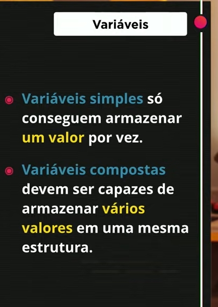
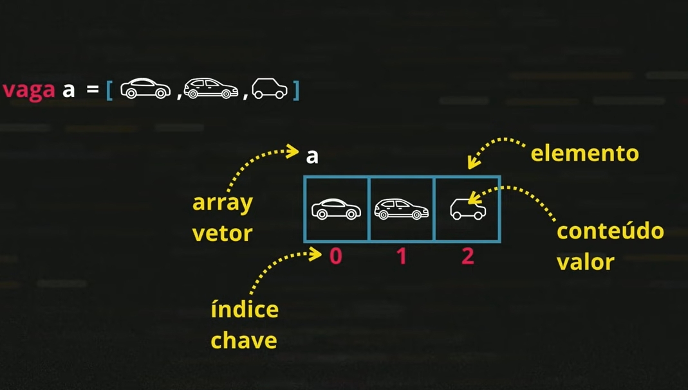
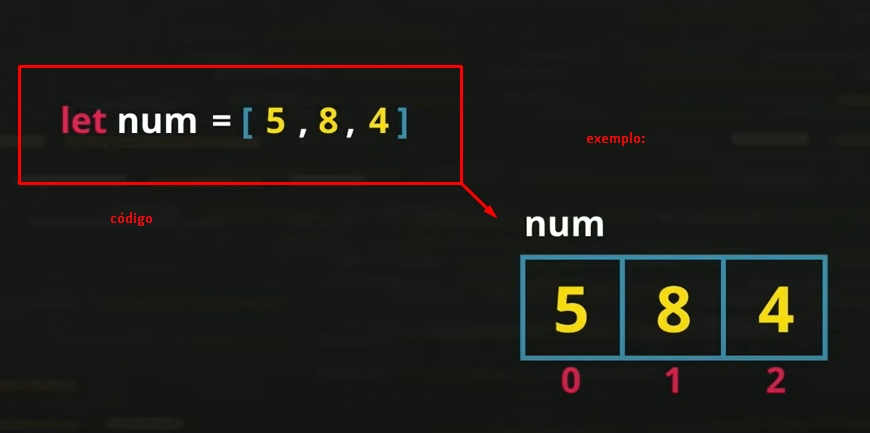
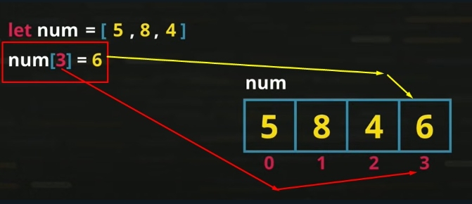
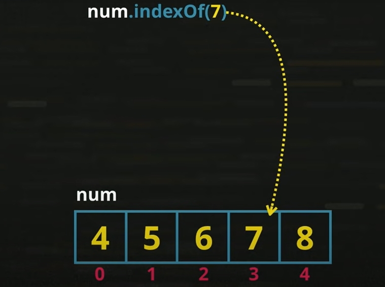

Oque é um vetor(array)
Vetor ("array" em inglês) é uma variavel com varios espaços, como mostra na imagem abaixo, ele é composto de elementos.
Elemento é um par que agrupa o espaço da memoria, o valor colocado dentro dele, e o indice/chave
Então resumindo a imagem abaixo, um vetor(array)/variavel composta, é uma variavel que tem varios elementos, cada elemento é composto pelo seu valor, e uma por indice/chave de identificação
Código exemplo:
Para incrementar um valor dentro da array, podemos fazer da seguuinte forma.
Adicionar elemento
Dessa forma como podemos ver acima, o valor e incluido na possição do indice 3, Lembre sempre de que o valor e removido ou acrescentado pelo indice nesse metodo.
Adicionar na ultima posição
Podemos também acrecentar um valor sempre na Ultima possição,, usamos o metedo num.push(valor)
Comprimento do do Vetor
num.length, essa declaração é um atributo, para saber quantos elementos tem na variavel do vetor
Ordenação crescente
num.sort(), faz com que os numeros dentro dos elementos seja de forma crescente, se estava [4,2,6], passa a ficar [2,4,6]
For in
Simplifica a formatação da listagem do for
for(let ps in num ){
console.log(`Numero ${num[ps]}- ${ps}`);
}
Buscar valor do indice de um elemnto
var.indexOf(valor) Essa função não procura o conteudo pelo valor do elemento no indice e sim pelo valor que está dentro do elemento, como mostra na imagem abaixo, o elemento "7" está na possição 3
